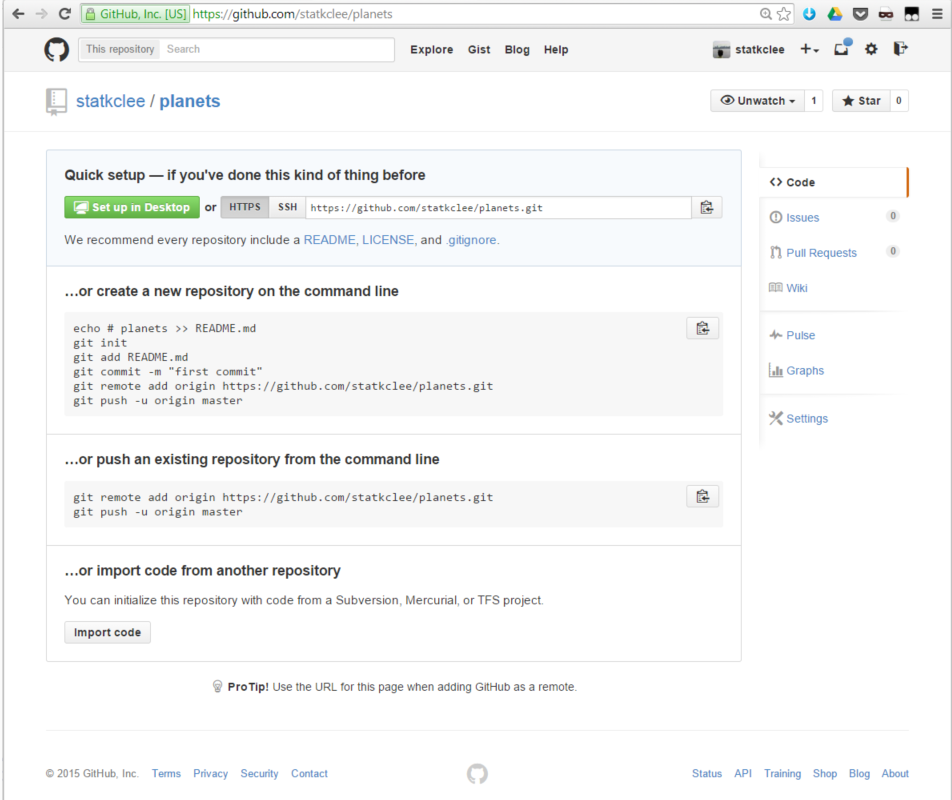

03. 협업(Collaboration)

연습문제 1. (토의)
GitHub 저장소를 생성하고, 복제하고, 파일을 추가하고, 파일 추가 변경사항을 GitHub에 푸쉬하고, 그리고 나서 GitHub 변경사항 타임스탬프(timestamp)를 살펴보자. GitHub는 시간을 어떻게 기록하고 왜 할까?
|  |
$ git clone https://github.com/statkclee/planets.git
$ echo "test ..." >> abc.txt
$ git add abc.txt
$ git commit -m "commit github test ... "
$ git push origin master
....
|